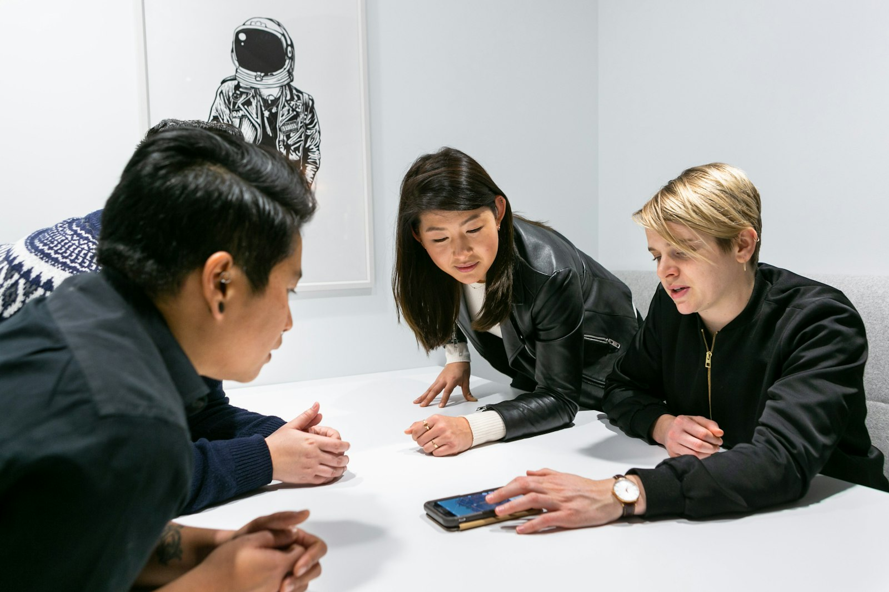

高専ベンチャーとは

高専ベンチャーは、高専生の可能性を最大限に引き出すために機会を創出しています。
2012年3月に我々は高専生に初めてお会いしました。
２週間の開発合宿、５名の現役生との合宿生活を通じて、技術に対する情熱とひたむきさに衝撃を受けました。都市部に比べ機会が少ないことにより、経験に基づいた自信が彼らには少ないと感じました。
そこで高専生に多くの機会を提供することで我々は高専生の可能性を最大化できるように高専ベンチャーを設立しました。
近年は大きくIT化にシフトしており、企業からも技術力の高い学生が求められる時代となってきています。 そこではインターンなどの技術的な交流を通じて、高専生と企業とのギャップをなくし、互いに納得のいく選択肢をとれるような仕組みを確立していきます。他にも、海外や独立して働くという選択肢、高専そのもののブランドの構築などにもドメインをひろげてまいります。
高専ベンチャーではこれらの活動を通じて、高専の業界の発展と、ひいては若いエンジニアの活躍する世の中を創出するために、貢献していくことを目指しています。
高専ベンチャー株式会社 代表取締役 澤木陽太郎
沿革
- 東京・綾瀬に研究型オフィスを開設
- 千葉・木更津に開発拠点を開設
- 東京・神田に本社オフィスを開設
- 東京・南千住に開発拠点兼寮「弦本寮」を開寮（現在は活動を終了）